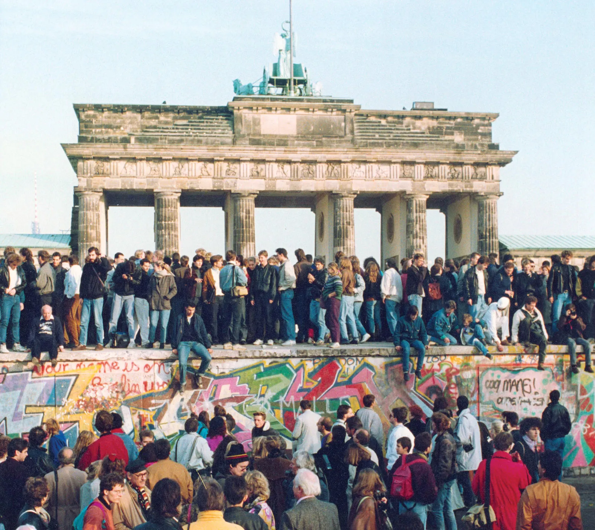
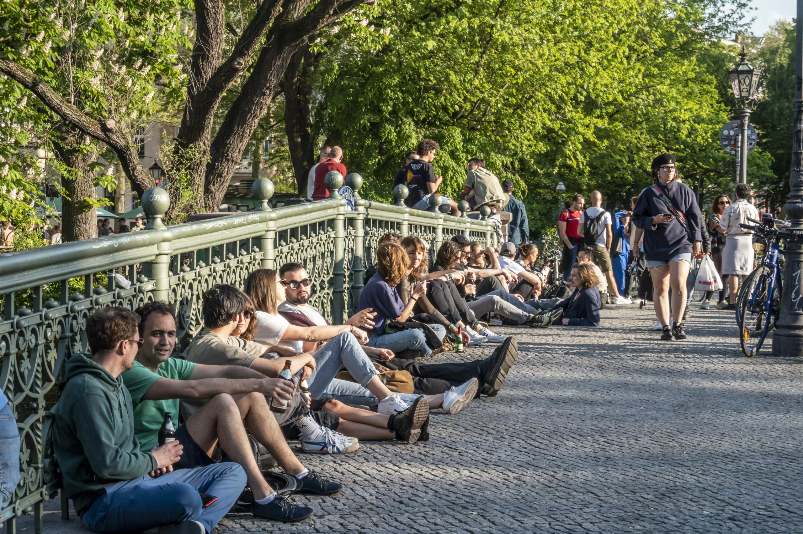

Hallo, Berlin.

Berlin was the capital of Prussia and then, from 1871, of a unified Germany. Though partitioned into East and West Berlin after World War II, the reunification of East and West Germany led to Berlin's reinstatement as the all-German capital in 1990.
Summer in Berlin: The ultimate guide
Summer in Berlin can be truly special, but are our favourite things to do? We round up the best museums, lakes, bars and hidden tips.
